Listening
Penguin Readers
EASYSTARTS
Simon the spy • 11:21
Summary
Simon Simple is going on holiday and the police are looking for a spy. On the train, Simon meets a beautiful girl. He likes her and she likes him. But the spy is there too. Simon and the police cant see the spy. Can you?
Paragraph 1
Simon Simple is at the station. He is going on a train. There are policemen at the station. There are policemen on the trains. They are all working very hard. “Why are the police here?” Simon asks a man. “Look,” the man says. Simon looks at the man’s newspaper. ‘Do you know this man?’ he reads. ‘He’s a spy! Find (h)im! Stop (h)im! Catch (h)im!’
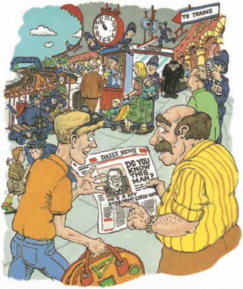Paragraph 2
Simon looks at the peopl(e) in the station. He can see students in jeans, and men in suits. He can see families and children. He can't see any spies. Simon’s train goes at 11.00, and it is 10.57 now. Simon runs to the train. There is an old woman with an umbrella near Simon. She is walking very fast. Simon doesn't see her. He doesn't see her bag.
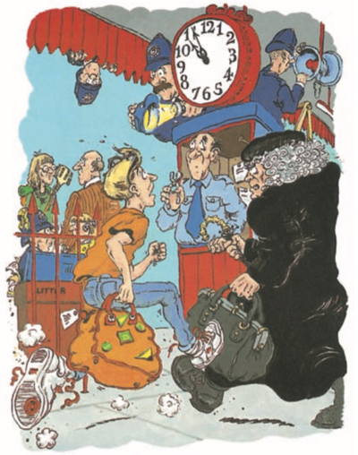Paragraph 3
The old woman’s bag hits Simon’s foot. Simon falls. His bag opens. His things fall to the ground. The old woman’s bag is open, too. A letter falls out. Simon puts his things into his bag. The old woman’s letter is with Simon’s things. Simon does not see i(t). He puts the /ðiː/ old woman’s letter in his bag. He closes his bag and runs to the train.
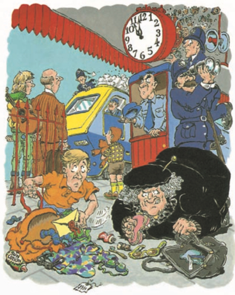Paragraph 4
Simon sits down in the train. There is a beautiful girl beside him. “Hello,” Simon says. “Hello,” the girl says. The old woman is on the train, too. She is looking at Simon’s bag. She wants her letter. There are policemen on the train. They can't find the spy. The old woman sees the policemen. She turns and walks quickly down the train.
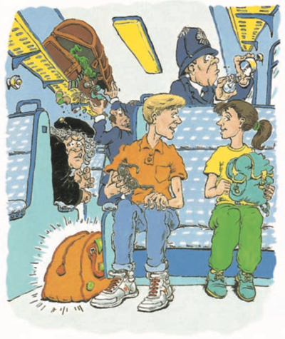Paragraph 5
Simon likes the girl. She likes him. “There’s a restaurant on the train,” Simon says. “Do you want a cup of coffee?” “Yes, please,” the girl says. “OK, wait here,” Simon says. Simon takes his bag and goes to the restaurant. The old woman is waiting for him. Simon doesn't see her. He doesn't see her foot.
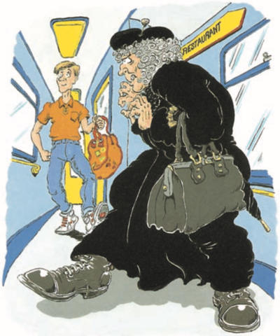Paragraph 6
The train is going fast. Simon falls. The old woman falls, too. She sits down on the floor. “Oh, I’m sorry,” Simon says. He helps the old woman. Simon sees the old woman’s shoes. He looks at her shoes, and he looks at her face. “They’re no(t) women’s shoes,” Simon thinks. Simon buys the coffee and goes back to the girl.
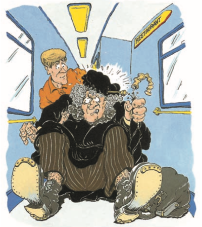Paragraph 7
The train stops. Simon and the girl are going on a boat now. They walk from the train to the boat. There are policemen here, too. “What do they want?” the girl asks. “There’s a spy,” Simon says. “A spy?” the girl says. “I can’t see any spies.” Simon looks, too. He sees families and students. He sees the old woman. “No,” Simon says. “I can’t see any spies.”
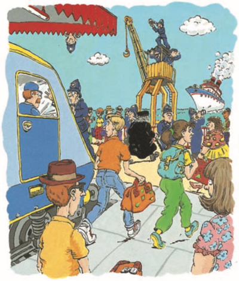Paragraph 8
It is a beautiful day. The sun is shining and the water is blue. Simon and the girl sit near the water and wait. The boat is coming. "What's your name?" Simon asks. "Samantha," the girl says. "Oh," Simon says. "My name's Simon. Simon and Samantha. That's nice." Simon and Samantha are talking. They don't see the old woman. They don't see her umbrella.
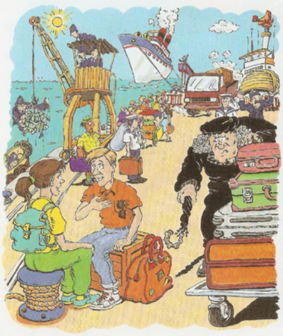Paragraph 9
"Look out!" a man shouts. "There's a lorry!" Simon and Samantha look. A lorry is coming down the road very fast. They jum(p) back. The old woman jumps back, too. Simon sees her trousers. "They're not women's trousers," Simon thinks. "Come on, Simon, the boat's here," Samantha says. Simon and Samantha get on the boat.
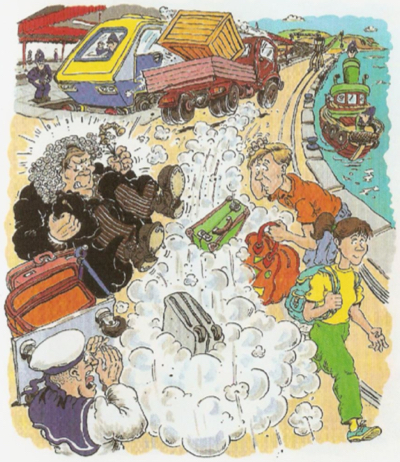Paragraph 10
Simon opens his bag and takes his lunch out. He takes the old woman's letter out, too, but he doesn't see it. "Do you want a sandwich?" Simon asks Samantha. "Yes, please," Samantha says. She takes her lunch out of her bag. "Do you want an apple?" she says. The old woman is behind them. Simon and Samantha don't see her. They don't see her hand.
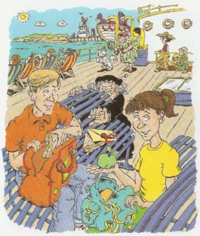Paragraph 11
he boat is going fast now. The wind is strong. Samantha's hair goes in her eyes. The wind takes the old woman's letter. The letter flies along the boat. "What's that paper?" Samantha says. "Is it your boat ticket?" "I don't know," Simon says. Simon runs. He wants his ticket. The old woman runs, too. She wants her letter.
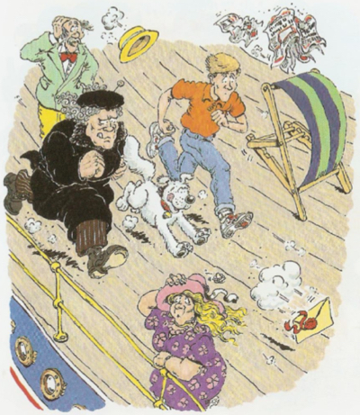Paragraph 12
Simon and the old woman run fast. They are near the paper now. "Woof !" What is that? It's a dog! He's running very fast. He runs to the paper and catches it in his mouth. "My ticket!" Simon says. "My letter!" the old woman says. The dog runs along the boat. "Catch the dog!" Simon says. "Stop (h)im!" says the old woman.
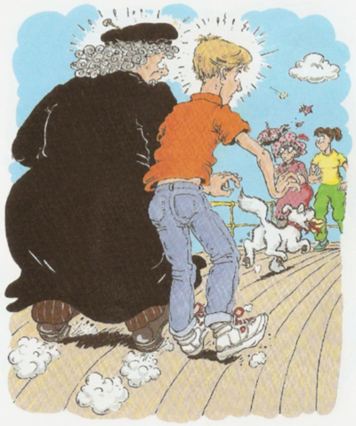Paragraph 13
The dog is happy. He can run fast. He's playing a game with Simon and the old woman. He doesn’t see Samantha. Samantha jumps up and catches him. "I've got (h)im, Simon," Samantha says. Simon and the old woman run to Samantha. The paper's in the dog's mouth. Simon looks at it. "That's not my ticket," he says. "No," the old woman says. "It's my letter."
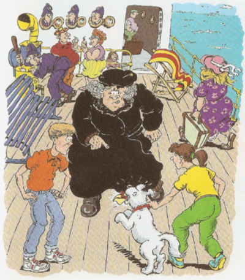Paragraph 14
The dog likes Simon and Samantha, but he doesn't like the old woman. He takes her coat in his mouth and pulls it. The coat falls to the ground. The wind takes the old woman's hat. It falls into the water. Her hair falls with the hat. Simon and Samantha look at the old woman. It's not an old woman! It's a man! "The spy!" Simon says. "Police! Come here!"
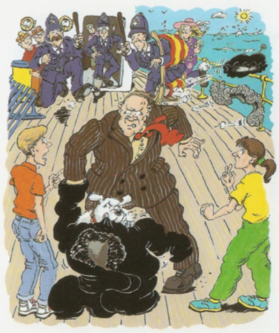Paragraph 15
The police are very happy. "Thank you, Simon," they say. "Now we have the spy. But the spy has a letter. The letter has names and addresses on it. We want the letter but we can't find it. Where is it? Do you know?" Simon looks at the dog. The dog looks at Simon. "There's the letter," Simon says. "Where?" says the policeman. "It's in the dog," Simon says.
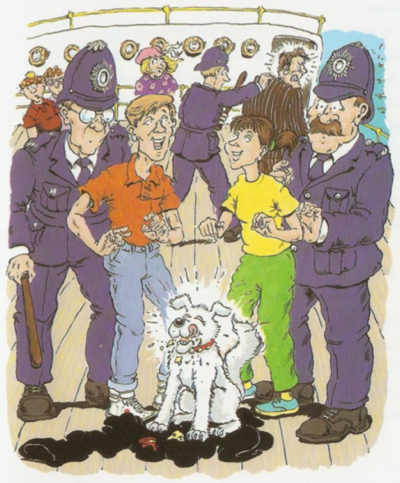